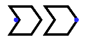
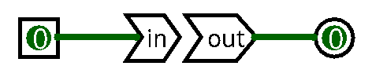

| Library: | Wiring | |
| Introduced: | LogisimCL - 3.0.0 | |
| Appearance: |  |  |
The Bit-Labeled Tunnel (BLT) is a routing component designed to express
bit-level rearrangements, selections, and replications in a compact form.
Unlike Logisim's standard tunnel - whose purpose is to connect distant wires
through a shared textual label - the BLT does not create implicit
connections. Instead, its behavior depends exclusively on the
Bit Specifications
attribute, written in CSV format.
The BLT takes an input bus (or provides an output bus, depending on its mode) and produces a reordered version of that bus according to the mapping defined in the specification. Each entry in the CSV corresponds to a destination bit of the BLT output, and each entry may refer to:
3),7,6,5,4),0 or 1, orThis makes the BLT useful for constructing wiring patterns such as: bit extraction, bus replication, field packing/unpacking, variable-bit routing generated by YoSYS, and reindexing required by circuit-level netlists. The BLT performs no logic of its own; it merely rewires and rearranges data according to the mapping provided.
Is Output?is set to
No, this is the BLT's input bus and pin appears at the tail of the figure. When set to
Yes, this pin becomes the output bus instead, and it appears at the head of the figure. Its width is defined by the
Data Bitsattribute.
50 or 1N7,N6,N5,N4,N3,N2,N1,N0 - reverses an 8-bit busN0,N1,N2,N3,1,1,0,0 - replicates selected bits with constantsNo: the BLT receives data.
Yes: the BLT emits its mapped data.
The BLT itself cannot be edited with the Poke Tool. However, the user may poke connected wires or input components to observe how the specified bit routing affects the resulting output.
Allows editing of the BLT's label.